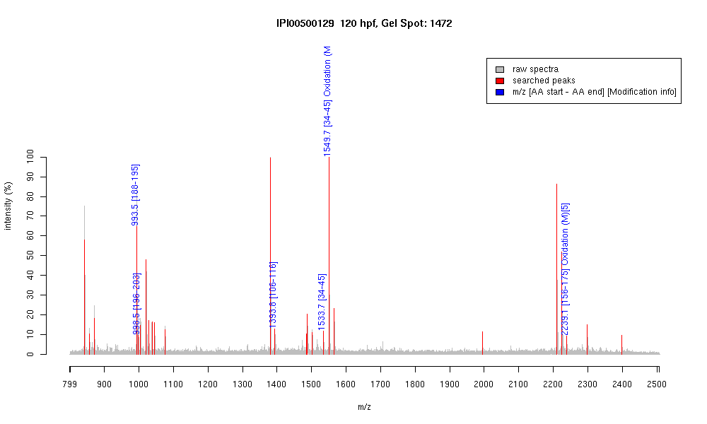

| Name | "PREDICTED: similar to crystallin, beta B1" |
|---|---|
| MW | 25941 |
| PI | 6.53 |
| Mascot Protein Score | 69 |
| Masses (matched / unmatched) | 5 / 30 |

| Peptide | MZ (calc) | MZ (observed) | Error (DA) | Error (PPM) | Start | Stop | Modifications |
|---|---|---|---|---|---|---|---|
| HFNEYGAR | 993.4536 | 993.4554 | 0.0018 | 2 | 188 | 195 | |
| HPQFQSVR | 998.5166 | 998.5173 | 0.0007 | 1 | 196 | 203 | |
| NDYLLSFRPIR | 1393.7587 | 1393.7689 | 0.0102 | 7 | 106 | 116 | |
| MYVFDQENFQGR | 1533.6791 | 1533.7429 | 0.0638 | 42 | 34 | 45 | |
| MYVFDQENFQGR | 1549.674 | 1549.6843 | 0.0103 | 7 | 34 | 45 | Oxidation (M)[1] |
| VGSIMVSCGTWVGYQYPGYR | 2239.031 | 2239.1353 | 0.1043 | 47 | 156 | 175 | Oxidation (M)[5] |